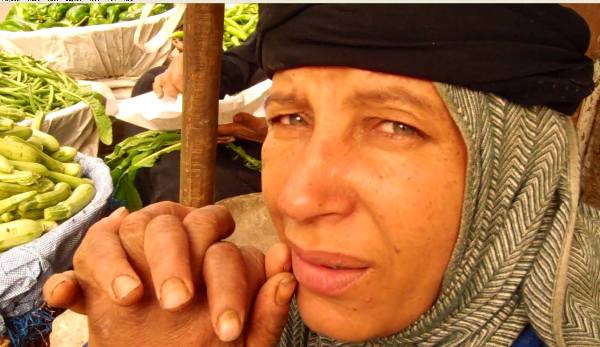

أحدث الأخبار
- الخارجية: مصر تعزي إثيوبيا في ضحايا حادث الإنهيار الأرضي
- الموازنة الجديدة وحل اتحاد الكرة واحتياطي القمح.. أبرز العناوين
- الزمالك يكتسح رينجرز النيجيري بأربعة أهداف مقابل هدف وحيد
- القضاء الإداري يقضي بحل اتحاد الكرة وبطلان الانتخابات الأخيرة
- مقتل 3 أشخاص وإصابة 3 آخرين في حادث مروري بالبحيرة
- وزير الخارجية يجري اتصالاً مع رئيس المجلس الرئاسي الليبي
- عاصمة مصر تتجه لزيادة سكانية نصف مليون العام الجاري
- باولو يقود هجوم الزمالك أمام رينجرز في دوري الأبطال
ريفيات يرحلن يوميا إلى المدينة بحثا عن الرزق
نساء يبيعن الخضروات بسوق بريف مصر، صورة رويترز
كتبت: أمنية طلال
تجمعت أحلامهن البسيطة في سيارة ميكروباص تنقلهن من الريف إلى المدينة، في محاولة منهن لفتح سوق جديد لسلعهن الريفية من خصروات، وجبن، وفطير، وبيض بلدي، هذه القصة التي تتجدد يوميا مع ريفيات يرحلن إلى القاهرة متحملات مشقة كبيرة من أجل "لقمة العيش ولا يتمتعن بأي امتيازات تأمن لهم الحياة فيما بعد".
"تستغرق الرحلة ثلاث ساعات يوميا ذهابا وأيابا، تبدأ في الصباح الباكر وتنتهي في الليل"، قالت فتحية صابر، البالغة من العمر 40 عاما، مؤكدة أنها لا تنام سوى بضع ساعات ثم تبدأ الرحلة مرة أخرى في اليوم التالي.
تستيقظ فتحية، الساعة الثالثة صباحا، لتبدأ رحلتها من قرية المناشي بالقناطر يوميا بشراء الخضروات الطازجة من السوق، متوجهة مع زميلاتها إلى القاهرة لتصل إلى سوق باب الشعرية في الساعة السادسة صباحا، قائلة "أنتهي من بيع الخضروات الساعة 7 مساءً لأعود إلى منزلي الساعة 10 ليلا".
وتتكلف فتحية 14 جنيها مواصلات، مستقلة مع زميلاتها ثلاث مواصلات (سيارة نقل وميكروباصان) للوصول إلى القاهرة على حد قولها، مؤكدة "صافي الربح من 30 إلى 60 جنيها في اليوم، حسب التساهيل"، مشيرة إلى أنها تشتري الخضار بالآجل من أحد التجار لحين بيعه وتسديد ثمنه الذي غالبا لا يتجاوز 150 جنيها.

وتلجأ فتحية للسفر إلى القاهرة مؤكدة أن القاهرة سوق كبير والأسعار أغلى نوعا ما من الريف مما يحقق لها هامش ربح مناسبا، فهي تعمل لمساعدة زوجها الذي يعمل "أرزقي على باب الله" على حد تعبيرها، موضحة "الحالة على قدها، والحال عندنا مش ماشي والرزق شوية، وأنا باربي أولادي الستة وأولاد أخو زوجي الأيتام".
ولا تخشى فتحية من شئ سوى ضياع صحتها، قائلة "الصحة ما بقتش زي الأول ومش عارفة لو وقعت مين هيعالجني"، فلا تجد أحيانا رفاهية الحصول على إجازة أسبوعية لتغطية نفقات الأسرة.
ولا يوجد مصدر للدخل لدى فتحية وزوجها سوى عملهما، قائلة "أنا فلاحة بنت فلاحين ولا أعرف مهنة أخرى غير الفلاحة وبيع الخضروات"، فالمرأة تعتمد على تربية الطيور في المنزل للتوفير وللاهتمام بغذاء أولادها في مراحل التعليم الحكومي المختلفة.
قدر الجهاز المركزي للتعبئة العامة والإحصاء الأسر المصرية التي تعولها نساء بـ16% من الأسر المصرية، في حين قدرت منظمات المجتمع المدني المعنية بالدفاع عن حقوق المرأة نسبة الأسر التي تعولها نساء بـ30%.
من أجل إعالة الأبناء
ولا يختلف حال نجلاء حامد 36 سنة، من الشرقية ولديها ثلاثة أولاد عن حال فتحية كثيرا، فهي تعمل من أجل إعالة أسرتها بعد وفاة زوجها، حيث تقوم ببيع الليمون في سوق باب الشعرية.
تعاني نجلاء كثيرا في المواصلات "غير الآدمية" كما وصفتها، قائلة "أذهب يوميا إلى سوق العبور في الساعة الرابعة صباحا، وأعود إلى سوق باب الشعرية في السادسة صباحا، وأستمر في العمل حتى الساعة العاشرة يوميا"، موضحة "لو قعدت يوم مش هالاقي أكل أنا وأولادي".
تضيف نجلاء "دخلي مش بيكفينا، لكن ربنا بيرزق من عنده والناس بتساعدني في الإنفاق"، مشيرة إلى أن هامش ربحها يوميا لا يتعدى 30 جنيها في أفضل الحالات.
وتمثل المرأة المصرية 23% من إجمالي قوة العمل في مصر، حسب إحصاء الجهاز المركزي للتعبئة العامة والإحصاء لعام 2010، وتعمل 46.7% منهن في القطاع غير الرسمي بلا أي حقوق تأمينية.
وترى زينب عماد، موظفة، أن الخضار الذي تبيعه الفلاحات يتميز بأنه طازج خاصة في بداية اليوم، موضحة أنه بسهولة يمكن معرفة جودة الخضروات والتفريق بين الخضار الطازج وغير الطازج، قائلة "اعتدت شراء الخضروات منهن بعد أن تأكدت من طزاجته".
العيش بكرامة
رسم الزمن علاماته بقسوة على وجه فرحانة علي، التي تبلغ من العمر 75 عاما، حيث مازالت تأتي من المناشي كعادتها لبيع الخضورات يوميا في القاهرة لتعول نفسها وابنتها الصغيرة، أما باقي أبنائها فتزوجوا جميعا وأحوالهم المادية والمعيشية مستقرة.
وأوضحت فرحانة "أعمل من أجل العيش بكرامة وعدم التسول"، ورغم قسوة الظروف وصعوبة عملها الذي تقضي فيه أكثر من 15 ساعة يوميا على حد قولها، إلا أن الابتسامة لا تفارق وجهها النحيل الملىء بالتجاعيد.
"اللي زينا ما يقعدش بعد الستين، هناخد معاش منين"، قالت فرحانة مجيبة على تساؤل أصوات مصرية عن حقها في التقاعد بعد سن الستين، معتبرة التقاعد رفاهية لا يعرفها فقراء مصر.
ولا تخضع العاملات بالقطاع غير الرسمي لقانون العمل 12 لسنة 2003، ولا يتمتعن بحماية تعاقدية تضمن لهن امتيازات منها ساعات العمل، والإجازات، وحد أدنى للأجر، وتأمين صحي واجتماعي فليس لديهن فرصة للعلاج أو التقاعد إذا رغبن في ذلك.
ولا تحصل هؤلاء النساء على معاش الضمان الاجتماعي مثلما أكدت، فاتن الصعيدي، مدير إدارة الضمان الاجتماعي بوزارة التضامن الاجتماعي، موضحة أن النساء اللاتي يحصلن على المعاش هن من ليس لديهن دخل، وغير مؤمن عليهن، ولا يحصلن على نفقة زوجية في حالة الطلاق.
ولا يتعدى معاش الضمان الاجتماعي للنساء المستحقات 450 جنيها، كما أكدت الصعيدي، مشيرة إلى أن هؤلاء النساء يمكنهن الاشتراك في صندوق العمالة الموسمية باشتراك بسيط ليحصلن على معاش في حدود 250 إلى 300 جنيه.
الحماية الاجتماعية هي الحل
وترى منى عزت، مسؤول برنامج "النساء والعمل" في مؤسسة المرأة الجديدة، أن العاملات في القطاع غير الرسمي مسؤولية الدولة ويجب أن يتمتعن بالحماية الاجتماعية، لكن عليهن أيضا إلى أن يتحقق ذلك، تنظيم أنفسهن في نقابات تدافع عن حقوقهن.
وقالت عزت إن المادة (17) في دستور 2014 تنص على "التأمين على كافة فئات المجتمع بما فيهم العمالة غير المنتظمة والتي تعمل لحساب نفسها"، حرصا من المشرع الدستوري على تأمين هذه الفئة ضد أخطار العمل، من بينها الوفاة، وإصابة العمل (والعجز بنوعيه)، والمرض، والشيخوخة.
وطالبت عزت بضرورة تعديل قانون العمل تطبيقا لمواد الدستور، وبما يضمن حماية جميع العاملين من مخاطر العمل، موضحة أن النساء يساهمن بنسبة كبيرة في القطاع غير الرسمي.
وأوضح الباحث الاقتصادي، إلهامي الميرغني، أن عاملات الزراعة، والبائعات الجائلات، وعاملات المنازل، وعاملات مصانع بير السلم لا يتمتعن بأي ضمانات أو حماية من مخاطر العمل، "على الرغم من أن القطاع غير الرسمي أكبر مستوعب للعمالة في مصر وخاصة النساء في ظل انكماش فرص العمل".
وذكرت ورقة بحثية أعدتها وزارة القوى العاملة والهجرة، الأسبوع الماضي، تحت عنوان "أوضاع العاملين في القطاع الخاص: منظور نوعي" أن تركز المرأة في القطاع غير الرسمي ينطوي على العديد من الأمور التي تؤثر سلبا على المرأة، حيث لا تتمتع العاملات في هذا القطاع بأي حماية تعاقدية تكفل لهن حقوقهن من حيث ساعات العمل، والحد الأدنى للأجر أو توفر لهن شروط عمل ملائمة، فضلا عن افتقادهن الحماية التأمينية والضمانات الاجتماعية.
ومع ذلك فليس من الواضح ما إذا كان قانون العمل الجديد الذي يجرى الإعداد له حاليا، سيتصدى لهذه المشكلة أم لا. وقال، هيثم سعد، المسؤول الإعلامي لوزارة القوى العاملة والهجرة، لأصوات مصرية إن تعديلات قانون العمل التي أجريت ليست نهائية وسيتم مراجعتها خلال جلسات الحوار الاجتماعي بالتوافق بين أطراف العملية الإنتاجية.
إلا أن وزارة القوى العاملة تحاول في الوقت الحالي التعامل بشكل آخر مع مشكلة العاملين في القطاع غير الرسمي. ففي تصريحات أرسلتها لأصوات مصرية عبر البريد الاليكتروني، قالت ناهد العشري وزيرة القوى العاملة إن الوزارة تسعى لتوفير الحماية والرعاية لهذه الشريحة من خلال تنظيم أوضاعهم ودمجهم مع باقي قطاعات المجتمع المنتظمة.
وأوضحت عشري أن الوزارة تعمل حاليا على تسجيل العمال في القطاع غير المنظم ضمن قاعدة البيانات فى 27 وحدة للعمالة غير المنتظمة والمنتشرة في مديريات القوى العاملة بمختلف محافظات الجمهورية.


تعليقات الفيسبوك